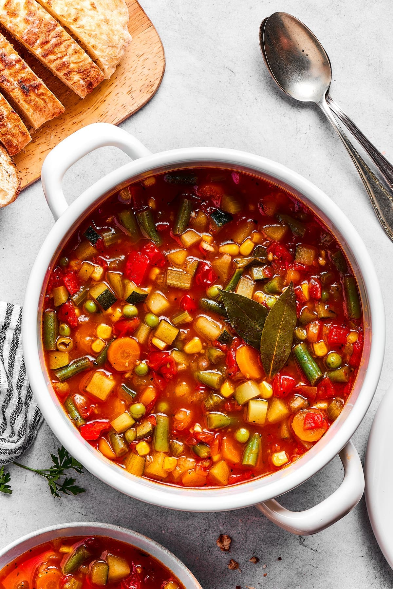
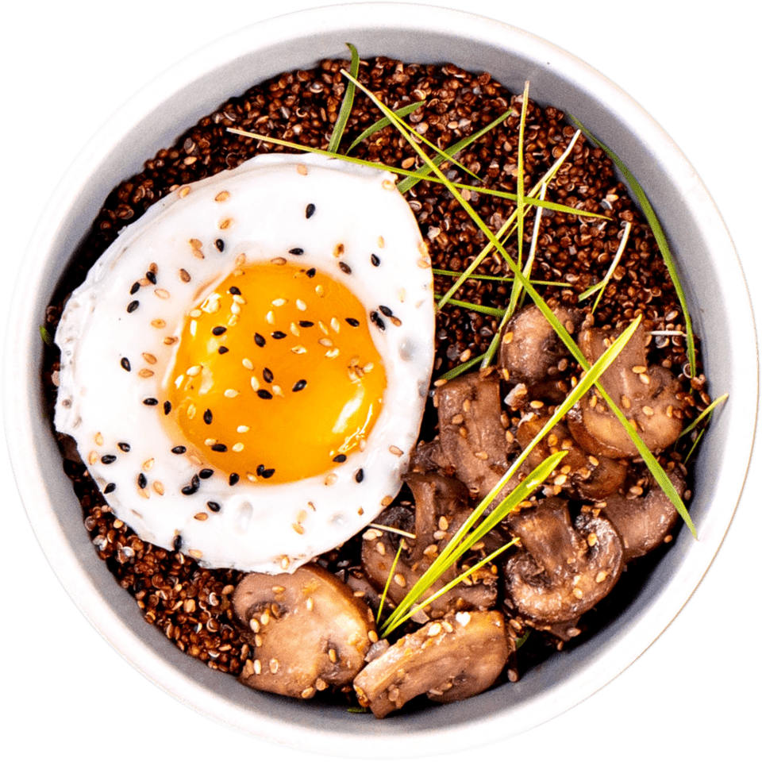
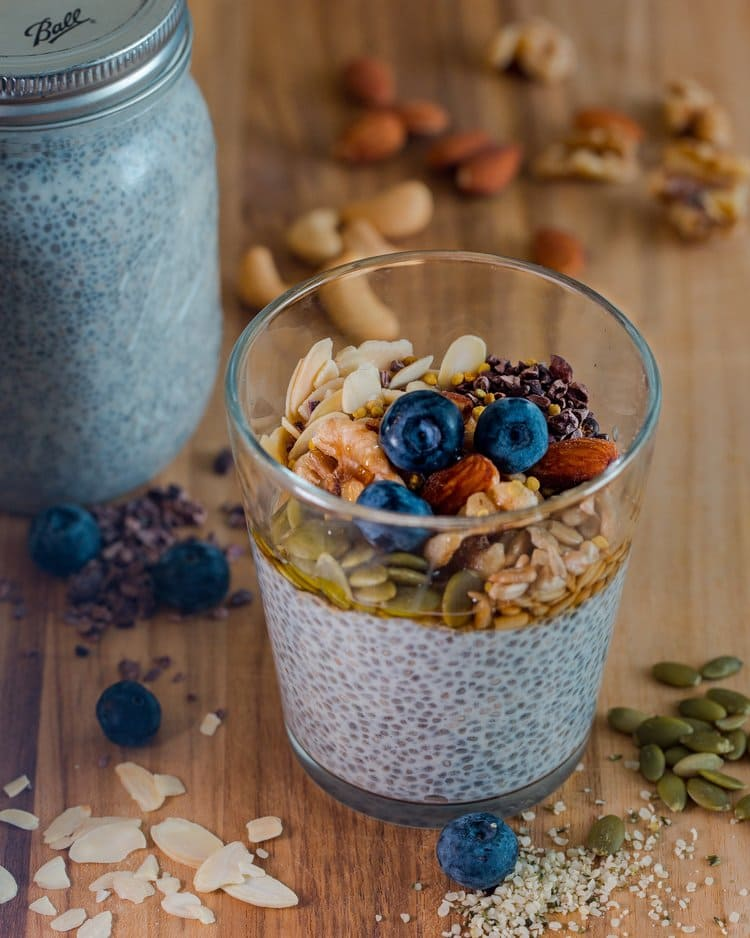
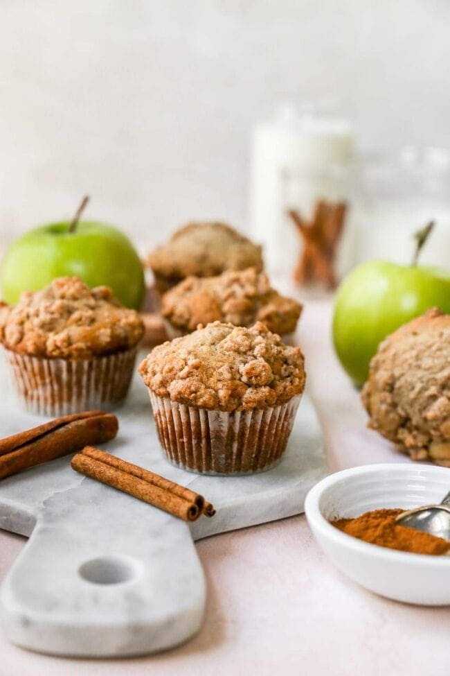
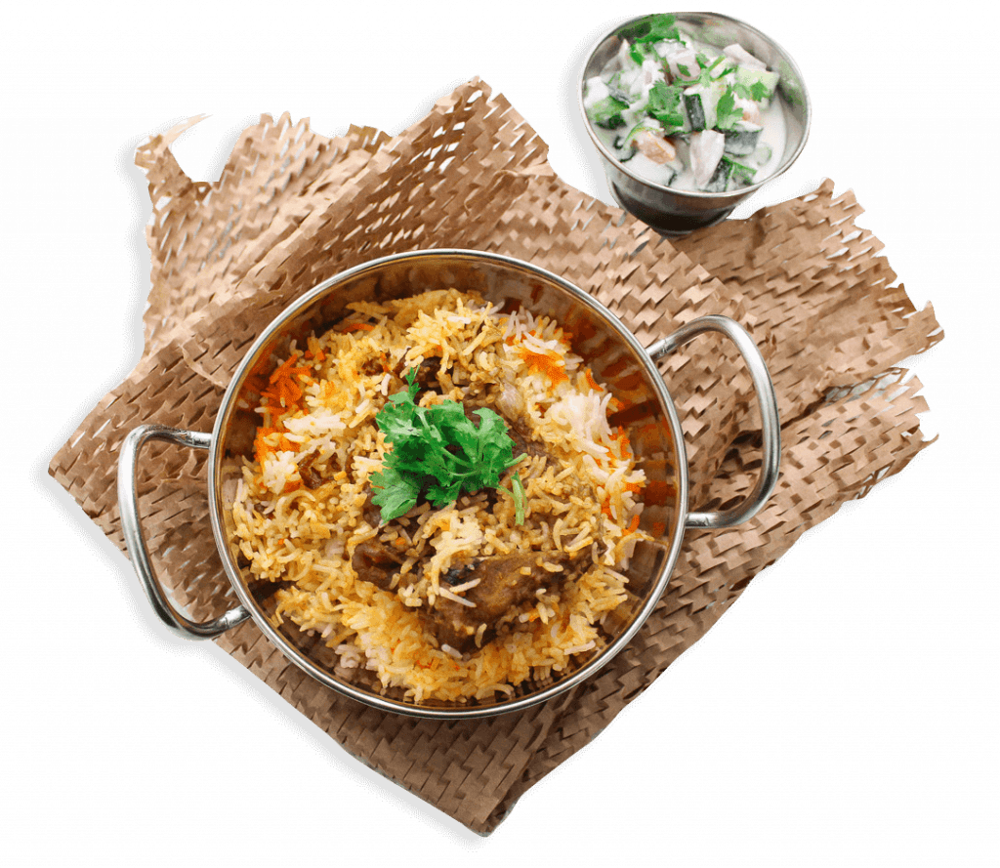
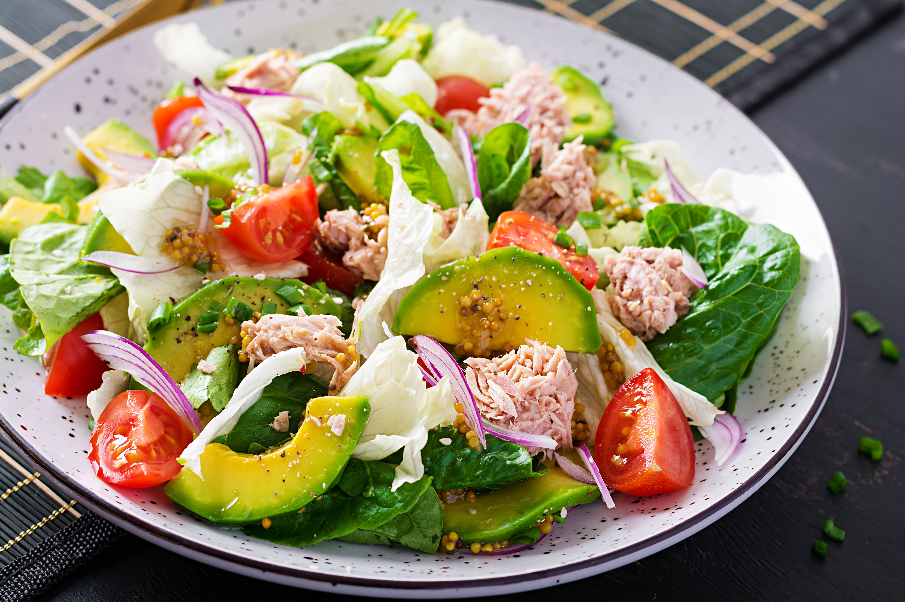
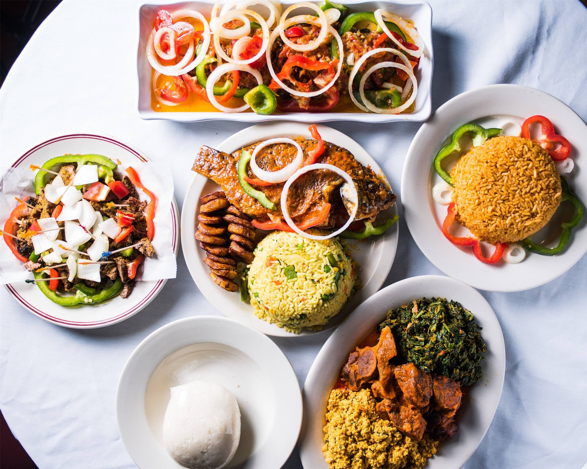
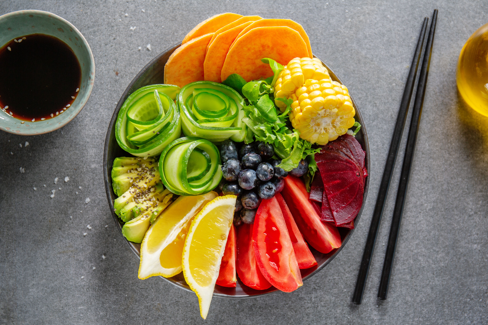

Older Posts
If you tried one of my recipes or techniques and loved it (or even if you didn't), let me know. Also, feel free to share any of my recipes, posts or photos, but just be sure to credit my blog and mention that you found it here first. I do my best to give credit to my sources as well. It's just good food karma.I also post lots of food photos and stories on Instagram (find me @thefoodsaga).
Now, let's go have some fun in the kitchen!

Kale salad with strawberries, blueberries, blackberries, raspberries, goat cheese, candied pecans, and a simple balsamic vinaigrette. This is the perfect summer salad!
Read More

I love cookies. Who doesn't? They are fun to make and eat, but sometimes I just need a super EASY cookie recipe. That is when I turn to my favorite No Bake Cookie recipe! They have all the benefits of traditional cookies, but they are quicker and easier.
Read More

Chicken Meatballs- you only need one bowl to make these moist, flavorful, and delicious baked chicken meatballs. They reheat and freeze well and can be used to make several different meals. They are the perfect meal prep recipe!
Read More

First of all, is it kabob or kebab? Either way, this recipe is delicious:) We love making these kebabs because you can prepare them in advance and they are SO easy! I know I am always looking for recipes to use up our garden zucchini, you can only make so much zucchini bread, ha!
Read MoreEvery time I take this Fruit Salad with Citrus Poppy Seed Dressing to a party or potluck it gets rave reviews. It's a simple fruit salad, but the dressing makes it extra special. This salad is so good, the recipe even made it into our cookbook, which has our very best recipes.
Read More

Our French Toast recipe is the very best, we make it all of the time, but sometimes we like to mix things up. This Crunchy French Toast recipe is a fun twist on the classic! You will love the crispy, crunchy cereal coating!
Read More

It's grilling season and if you are looking for a simple and delicious grilled chicken recipe, you have to try this Soy Ginger Chicken. I guarantee it will be a summer staple and a favorite at every BBQ.
Read More

If you are looking for an EASY dinner recipe, today is your lucky day. You only need 15 minutes to make this Teriyaki Chicken recipe. It is a family favorite and perfect for busy weeknights. Don't worry, the homemade teriyaki sauce is simple, fresh, and SO much better than any store-bought.
Read More
